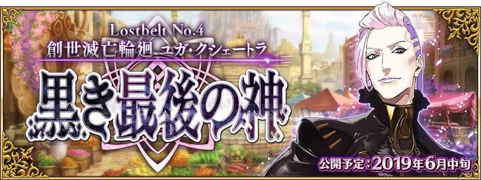

◆第2部 第4章「Lostbelt No.4 創世滅亡輪廻 宇迦淨土 黑色最終之神」預定開幕！◆
第4個異聞帯「創世滅亡輪廻 宇迦淨土 黑色最終之神」的舞台是印度。
自被優美蓮花彩繪的神秘壟罩的世界，請盡情享受新開始的故事！
※本頁面皆為開發中圖片。會有與實際圖片相異的情況。
◆公開時間◆
2019年6月中旬預定
◆開放條件◆
通過第2部 第3章「Lostbelt No.3 人智統合真國 SIN 紅之月下美人後開放。
※不需要通過亞種特異點(從Ⅰ到Ⅳ)。
預定自2019年6月15日(六) 18:00在niconico生放送播送發表關於第2部 第4章「Lostbelt No.4 創世滅亡輪廻 宇迦淨土 黑色最終之神」最新情報等的特別節目。
詳情請在此處的公告確認。